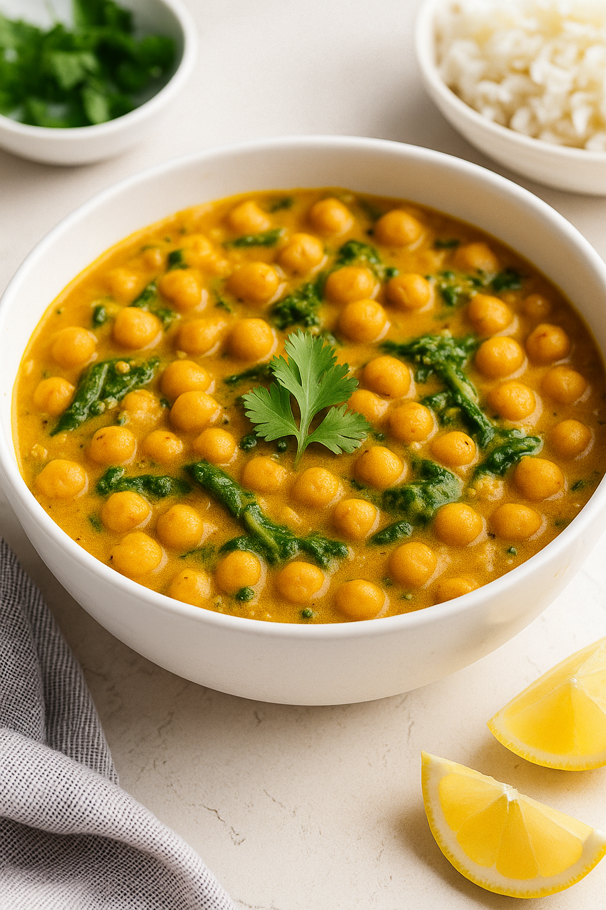

005
🥥🌿 Chickpea & Spinach Coconut Curry Link to heading

📝 Ingredients: Link to heading
- 1 tbsp olive oil
- 1 medium onion, finely chopped
- 3 cloves garlic, minced
- 1 tbsp grated ginger (optional)
- 1½ tbsp curry powder
- 1 can (14 oz) coconut milk
- 1 can (14 oz) diced tomatoes (optional for tang)
- 2 cans (14 oz each) chickpeas, drained and rinsed
- 4 cups fresh spinach (or 1½ cups frozen)
- Salt and pepper to taste
- Juice of ½ lemon (optional)
- Fresh cilantro for garnish (optional)
- Cooked rice or naan to serve
🍳 Instructions: Link to heading
-
Sauté the aromatics
Heat olive oil in a large skillet over medium heat. Add the chopped onion and cook for 4–5 minutes until soft and translucent. -
Add garlic, ginger, and curry powder
Cook for 1 minute until fragrant. -
Pour in coconut milk and tomatoes
Stir to combine. Bring to a simmer. Let it cook for 5 minutes. -
Add chickpeas and spinach
Stir in the chickpeas and cook for 10 minutes. Add spinach during the last 2–3 minutes and let it wilt. -
Season and finish
Add salt and pepper to taste. Squeeze lemon juice for brightness, if using. -
Serve
Spoon over rice or scoop up with warm naan. Garnish with cilantro if desired.
🍽️ Nutritional Info (per serving, approx): Link to heading
- Calories: 390 kcal
- Protein: 13g
- Carbs: 35g
- Fat: 22g
- Fiber: 9g
- Iron: 30% DV
- Vitamin A: 80% DV
Note: Based on typical ingredients, actual values may vary.
⚠️ Allergen Disclaimer: Link to heading
- Contains coconut (tree nut family)
- Easily made gluten-free with rice
- Dairy-free & vegan by default
- Substitute coconut milk with cashew cream or oat milk + 1 tsp cor